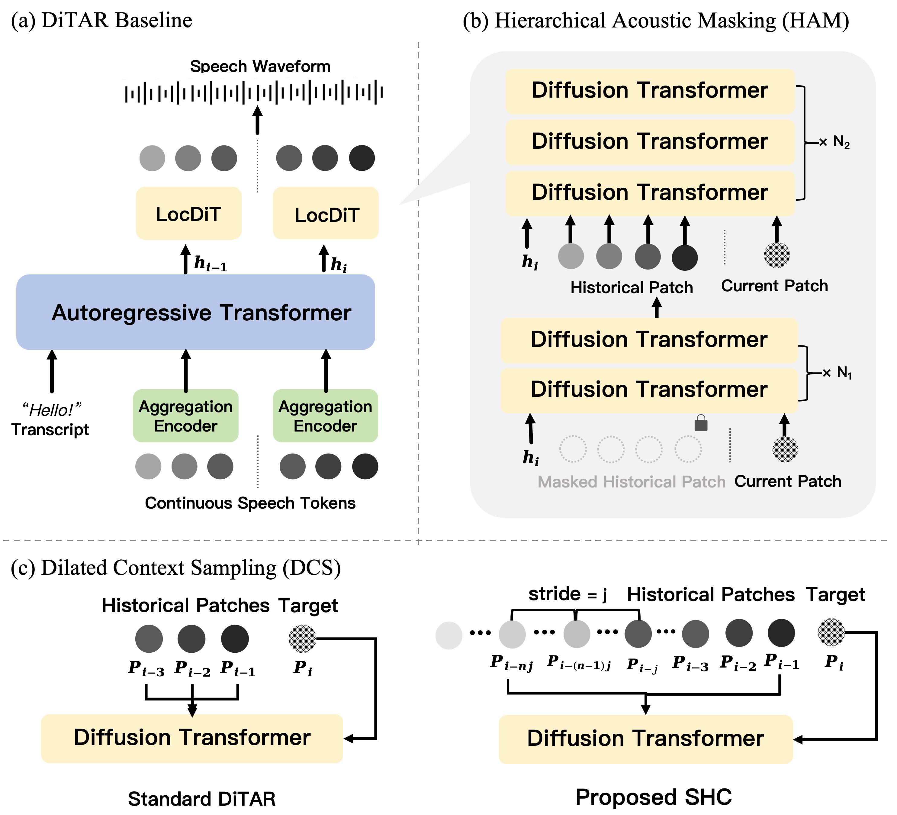

DiTAR+: Dual Optimization for Robust Autoregressive Diffusion Speech Synthesis
0. Contents
1. Abstract
Continuous-latent Autoregressive Diffusion Transformer (AR-DiT) models have demonstrated immense potential in zero-shot speech generation. Among them, DiTAR leverages continuous latent representations and autoregressive diffusion modeling to achieve high-fidelity and expressive speech synthesis. However, DiTAR still suffers from limited decoding stability when synthesizing long utterances or complex transcriptions. This instability primarily stems from a restricted historical receptive field and an acoustic inertia dependency within the diffusion decoder, which causes the model to ignore semantic conditions. To address these challenges, we propose DiTAR+, a dual-optimization framework for DiTAR-like AR-DiT models. First, we introduce Dilated Context Sampling to expand the macro-level historical receptive field without violating physical temporal continuity, thereby preventing cumulative error propagation. Second, we propose Hierarchical Attention Masking to prevent shallow layers from attending to acoustic pre-context, explicitly decoupling semantic alignment from acoustic detail reconstruction. Extensive experiments demonstrate that our framework effectively mitigates pronunciation errors and semantic hallucinations, enhances generation robustness on challenging sentences, and maintains exceptionally high speaker similarity throughout the entirety of long-form utterances.

2. Samples on Test-ZH and Test-EN
| Prompt | `CosyVoice2 | F5TTS | DiTAR | DiTAR+ |
|---|---|---|---|---|
3. Samples on ZH-Hard and ZH-Long
| Prompt | CosyVoice2 | F5TTS | DiTAR | DiTAR+ |
|---|---|---|---|---|